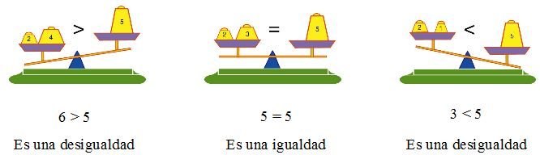
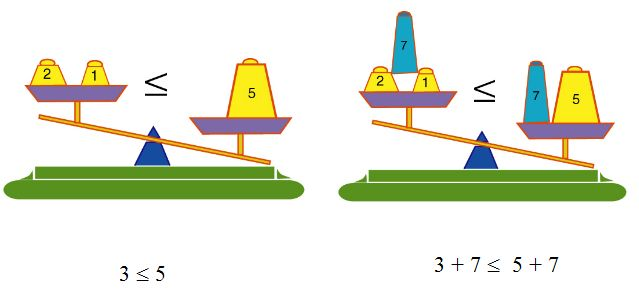

Con las siguientes imágenes puedes entender la diferencia entre una igualdad y una desigualdad:
 |
Igualdades y desigualdades. Ecuaciones e inecuaciones.
Dados dos números reales cualesquiera, \(a\) y \(b\), se pueden dar estas tres relaciones entre ellos:
- \(a < b\) (\(a\) menor que \(b\)). A la expresión la llamamos desigualdad.
- \(a = b\) (\(a\) igual que \(b\)). A la expresión la llamamos igualdad.
- \(a > b\) (\(a\) mayor que \(b\)). A la expresión la llamamos desigualdad.
|
La segunda relación se denomina igualdad y, cuando aparecen incógnitas además de cifras numéricas, dan origen a las ecuaciones. Las relaciones primera y tercera se denominan desigualdades y, cuando aparecen incógnitas además de cifras numéricas, dan origen a las inecuaciones. |
Por otro lado, estas propiedades que cumplen todos los números reales, hace que su conjunto, el conjunto de los números reales, sea totalmente ordenado. Hablamos entonces del orden de los números reales.
Estas relaciones numéricas la aplicamos de manera inconsciente en multitud de situaciones. Veamos los siguientes ejemplos:
Verdadero o falso
En el día de ayer, las temperaturas medias en cinco capitales europeas fueron:
| Capital | Madrid | Londres | Berlín | Moscú | Roma |
| Temperatura (ºC) | 16 | 8 | -1 | -5 | 8 |
Indica la veracidad o falsedad de la siguientes afirmaciones:
00:00:
Completa
Ordena la lista de temperaturas de la tabla anterior en orden ascendente (y luego, en orden descendente) colocando entre cada dos valores el signo <, =, >, que corresponda.
Ejercicio.
Escribe las siguientes informaciones utilizando las desigualdades (comprueba las soluciones):
- He sacado, en el último examen de matemáticas, al menos un 7.
- He utilizado mi móvil desde las 10 de la mañana hasta las 6 de la tarde.
- Cuando ganamos nuestro primer campeonato del mundo de fútbol la edad del seleccionador español Vicente Del Bosque era 59 años, cifra que superaba las edades de Busquets y Javi Martínez (ambos tenían 21) juntas.
- Como todo el mundo sabe, el valor del número real es menor que 4.
Propiedades de las desigualdades
Sean \(a\), \(b\) y \(c\) tres números reales.
|
• Si \(a < b\), entonces \(a + c < b + c\) para cualquier número real \(c\). • Si \(a < b\), entonces \(a·c < b·c\) para cualquier número real \(c > 0\) (positivo). • Si \(a < b\), entonces \(a·c > b·c\) para cualquier número real \( c < 0\) (negativo). |
Las desigualdades no se comportan igual que las igualdades cuando multiplicamos ambos términos por un mismo número (pues ello va a depender del signo del número por el que multipliquemos).
Las propiedades anteriormente descritas pueden enunciarse de la siguiente forma:
|
Veamos una representación gráfica de la primera de las propiedades:
 |
Verdadero o falso.
Ejercicio de investigación.
Vamos a estudiar cómo se comporta el orden de los números reales junto con la suma. Para ello, vamos a realizar varios ejercicios en los que sumaremos tanto números positivos como negativos a una desigualdad para comprobar si esta se mantiene o no.
Aplica a la desigualdad \(3 < 5\) las siguientes transformaciones.
-
Suma \(2\) a cada uno de los miembros de la desigualdad y comprueba si sigue siendo cierta.
-
Suma \(1'72\) a cada miembro y comprueba si sigue siendo cierta.
-
Suma \(-5\) a cada miembro y verifica si se mantiene la desigualdad.
Una vez realizados los tres apartados, debes llegar a una conclusión y activar la opción "Ver solución" para comprobar si estás en lo cierto.
Ejercicio de investigación.
A continuación, te proponemos una serie de ejercicios que ayudarán a comprender las propiedades de las desigualdades relacionadas con el producto.
Dada la desigualdad \(2 < 5\), realiza los siguientes apartados:
-
Multiplica los dos miembros por \(3\) y comprueba si se mantiene la desigualdad.
-
Multiplica ahora por \(4'5\) y comprueba si se mantiene la desigualdad.
-
Multiplica esta vez por \(1/2\) o, lo que es lo mismo, divide por \(2\) ambos miembros y comprueba si se mantiene la desigualdad.
Una vez hayas realizado los tres apartados llegado a una conclusión, haz clic en "Ver solución" y comprueba.
Veamos ahora que ocurre cuando multiplicamos por un número negativo. Dada la desigualdad \(2 < 4\), realiza los siguientes apartados:
-
Multiplica por \(-1\) y comprueba si se mantiene la desigualdad.
-
Multiplica ahora por \(-4\) y comprueba si se mantiene la desigualdad.
-
Divide ahora entre \(-2\) y comprueba si se mantiene la desigualdad.
Una vez hayas realizado los tres apartados llegado a una conclusión, haz clic en "Ver solución" y obtén una conclusión.